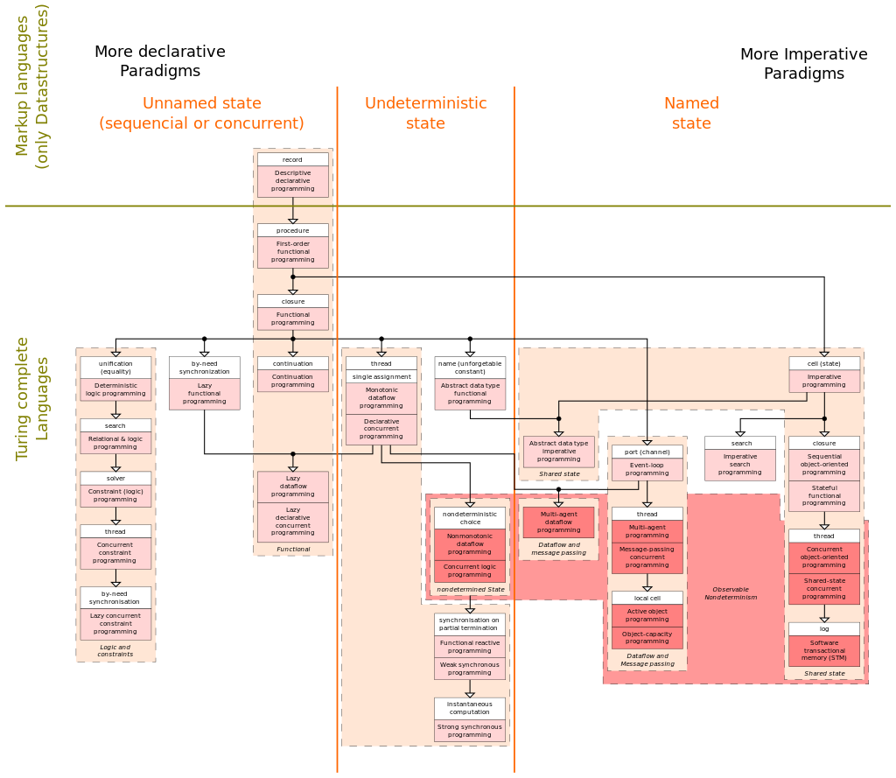

O paradigmă de programare este un stil fundamental de programare care permite specificarea unui model de rezolvare a unei probleme.
În implementarea unei soluții, uneori limbajul de programare folosit oferă aceleași mecanisme ca și paradigma folosită. Într-o astfel de situație implementarea metodei si verificarea soluției se face simplu. Se poate spune că paradigma de programare folosită este o clasă de limbaje. În acest sens putem spune că limbajul C include caracteristici ale paradigmelor imperativă și procedurală, iar la acestea limbajul C++ adaugă și caracteristici ale paradigmei de orientare pe obiecte.
Programarea funcțională este o paradigmă de programare care tratează calculul ca evaluare de funcții matematice și evită starea și datele mutabile. Se pune accent pe aplicarea de funcții, spre deosebire de programarea imperativă, care folosește în principal de schimbările de stare.
Limbajele de programare funcționale, mai ales cele pur funcționale, sunt promovate mai ales în mediile academice, fiind rar folosite în dezvoltarea de software comercial. Totuși, există limbaje funcționale folosite și în industrie și în aplicații comerciale, cum ar fi Erlang, OCaml, Haskell, Scheme (din 1986) și limbaje de programare specifice unor domenii, ca R (în statistică), Mathematica (calcul simbolic), J și K (în analiza financiară), și XSLT (XML).
Multe limbaje de programare nefuncționale, cum sunt C, C++ și C# pot fi făcute să aibă un comportament funcțional prin utilizarea pointerilor la funcții, biblioteca <functional>, respectiv funcțiile lambda.
Programarea funcțională este foarte diferită de programarea imperativă. Cele mai semnificative diferențe provin din faptul că programarea funcțională evită efectele laterale, care sunt utilizate în programarea imperativă pentru implementarea stării și intrărilor și ieșirilor. Programarea funcțională pură interzice efectele laterale, ceea ce îi aduce transparența referențială, care face mai ușor de verificat, optimizat, și paralelizat programele, și mai ușor de scris unelte automate de efectuare a acestor taskuri. Functionalele sunt rareori folosite în programarea imperativă. Acolo unde un program imperativ ar utiliza o buclă pentru parcurgerea unei liste, un stil funcțional folosește adesea o funcțională, map, care primește ca argumente o funcție și o listă, aplicând funcția pe fiecare element al listei, returnând o listă cu rezultatele.
În informatică, programarea imperativă, în contrast cu programarea declarativă, este o paradigmă de programare care descrie calculul ca instrucțiuni ce modifică starea unui program. În aproape același fel în care modul imperativ din limbajele naturale exprimă comenzi pentru acțiuni, programele imperative sunt o secvență de comenzi pentru acționarea calculatorului. Programarea procedurală este o metodă obișnuită de executare a programării imperative și de aceea cei doi termeni sunt folosiți deseori ca sinonime.
Programarea procedurală este uneori folosită ca sinonim pentru programare imperativă (specifică pașii care trebuie urmați de program pentru a se ajunge la starea dorită), dar se poate referi și la o paradigmă de programare bazată pe conceptul de apel de procedură. Procedurile, numite și rutine, subrutine, metode sau funcții (a nu se confunda cu funcțiile matematice, ci similare cu cele utilizate în programarea funcțională), conțin o serie de pași care trebuie executați. Orice procedură poate fi apelată la orice moment din execuția unui program, inclusiv de alte proceduri sau chiar de ea însăși.
Programarea orientată pe obiecte (POO, uneori și Programarea orientată obiect, uneori denumită ca și în limba engleză, Object Oriented Programming (OOP)) este o paradigmă de programare, axată pe ideea încapsulării, adică grupării datelor și codului care operează asupra lor, într-o singură structură. Un alt concept important asociat programării orientate obiect este polimorfismul, care permite abstractizări ce permit o descriere conceptuală mai simplă a soluției.
Programarea orientată pe obiect (Programare Orientată Obiectual) este unul din cei mai importanți pași făcuți în evoluția limbajelor de programare spre o mai puternică abstractizare în implementarea programelor. Ea a apărut din necesitatea exprimării problemei într-un mod mai natural ființei umane. Astfel unitățile care alcătuiesc un program se apropie mai mult de modul nostru de a gândi decât modul de lucru al calculatorului. Până la apariția programării orientate pe obiect, programele erau implementate în limbaje de programare procedurale (C, Pascal) sau în limbaje care nici măcar nu ofereau o modalitate de grupare a instrucțiunilor în unități logice (funcții, proceduri) cum este cazul limbajului de asamblare (asembler). Altfel spus o problemă preluată din natură trebuia fragmentată în repetate rânduri astfel încât să se identifice elementele distincte, implementabile într-un limbaj de programare. O mare problemă a programării procedurale era separarea datelor de unitățile care prelucrau datele (subrutinele), ceea ce făcea foarte dificilă extinderea și întreținerea unui program. Astfel s-a pus problema ca aceste două entități (date și subrutine) să fie grupate într-un anumit mod, astfel încât subrutinele să "știe" în permanență ce date prelucrează și, mai mult decât atât, ele să formeze un modul, adică o unitate care separă implementarea de interfață, ceea ce implică posibilitatea refolosirii codului. A apărut astfel conceptul de clasă. Clasa realizează, în speță, ceea ce am văzut mai înainte: grupează datele și unitățile de prelucrare a acestora într-un modul, unindu-le astfel într-o entitate mult mai naturală. Deși tehnica se numește "Programare Orientată Obiectual", conceptul de bază al ei este Clasa. Clasa, pe lângă faptul că abstractizează foarte mult analiza/sinteza problemei, are proprietatea de generalitate, ea desemnând o mulțime de obiecte care împart o serie de proprietăți.
Ideea POO (Programare Orientată Obiectual) este de a crea programele ca o colecție de obiecte, unități individuale de cod care interacționează unele cu altele, în loc de simple liste de instrucțiuni sau de apeluri de proceduri. Obiectele POO sunt de obicei reprezentări ale obiectelor din viața reală (domeniul problemei), astfel încât programele realizate prin tehnica POO sunt mai ușor de înțeles, de depanat și de extins decât programele procedurale. Aceasta este adevărată mai ales în cazul proiectelor software complexe și de dimensiuni mari, care se gestionează făcând apel la ingineria programării.